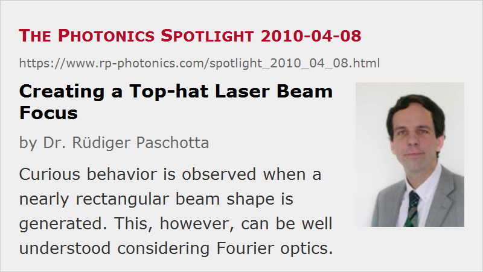

Creating a Top-hat Laser Beam Focus
Posted on 2010-04-08 as a part of the Photonics Spotlight (available as e-mail newsletter!)
Permanent link: https://www.rp-photonics.com/spotlight_2010_04_08.html
Author: Dr. Rüdiger Paschotta, RP Photonics Consulting GmbH
Abstract: Curious behavior is observed when a nearly rectangular beam shape is generated. This, however, can be well understood considering Fourier optics.
Ref.: encyclopedia articles on laser beams, beam waist, beam shapers

Some applications require a laser beam with a top-hat beam profile at the focus. If you believe that the focus is just a demagnified version of the original beam, you may try to get a rectangular shape there (e.g., using a simple aperture) and focus that down. You will fail, however, at least when you focus tightly: the result will be a spot with soft boundaries and rings around it. You should rather use a special kind of beam shaper, which will preserve a soft profile in the large beam, leading to a rectangular shape only in the focus.
In our theoretical reasoning, we can go the opposite way, starting with a super-Gaussian profile with flat wavefronts (at z = 0), and calculate how it evolves. (The super-Gaussian profile with a high exponent, here 8, approximates a rectangular shape.) The evolution of the intensity profile is illustrated in the figure below.

(Note that the color tones have been rescaled for each image, as otherwise little could be seen for the largest profile.)
Curiously, the profile first contracts, before it expands again, then acquiring a smooth shape.
The initial contraction can be understood by considering the Fourier-transformed profile, which exhibits a center part and rings with alternating phase. (This is well known for rectangular profiles, not that different for high-order super-Gaussian profiles.) Initially, these rings contribute amplitudes with opposite signs to the on-axis electric field in real space. After some distance, however, the contribution from the first (and strongest) ring in Fourier space gets approximately in phase with the contribution of the central part, so that a higher peak intensity at the center is obtained. The beam area has to become smaller then, as the total power is conserved.
So if you start with a large approximately Gaussian beam, having the right phase profile, the beam will first contract strongly, then expand and form a nearly rectangular shape, the contract again, and finally expand with a smooth shape. Quite a strange behavior, which however can be well understood considering Fourier optics.
This article is a posting of the Photonics Spotlight, authored by Dr. Rüdiger Paschotta. You may link to this page and cite it, because its location is permanent. See also the RP Photonics Encyclopedia.
Note that you can also receive the articles in the form of a newsletter or with an RSS feed.
Questions and Comments from Users
Here you can submit questions and comments. As far as they get accepted by the author, they will appear above this paragraph together with the author’s answer. The author will decide on acceptance based on certain criteria. Essentially, the issue must be of sufficiently broad interest.
Please do not enter personal data here; we would otherwise delete it soon. (See also our privacy declaration.) If you wish to receive personal feedback or consultancy from the author, please contact him e.g. via e-mail.
By submitting the information, you give your consent to the potential publication of your inputs on our website according to our rules. (If you later retract your consent, we will delete those inputs.) As your inputs are first reviewed by the author, they may be published with some delay.
|  |
If you like this page, please share the link with your friends and colleagues, e.g. via social media:
These sharing buttons are implemented in a privacy-friendly way!